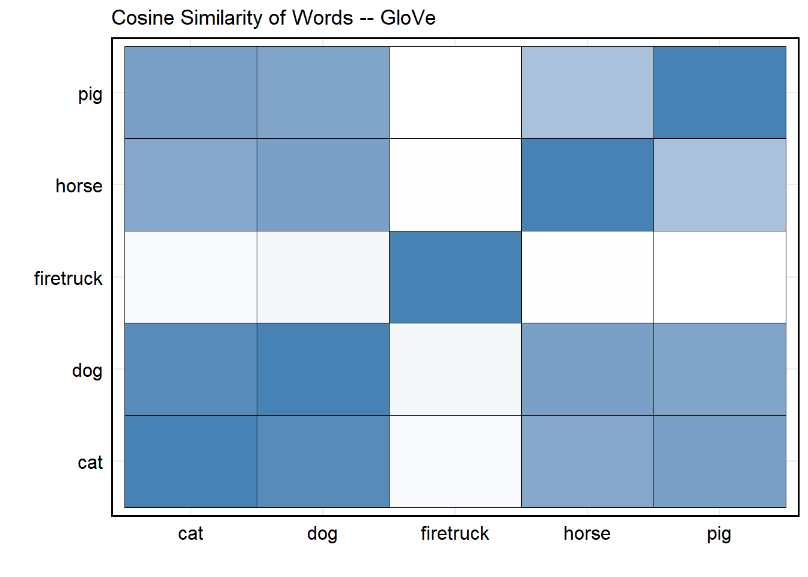
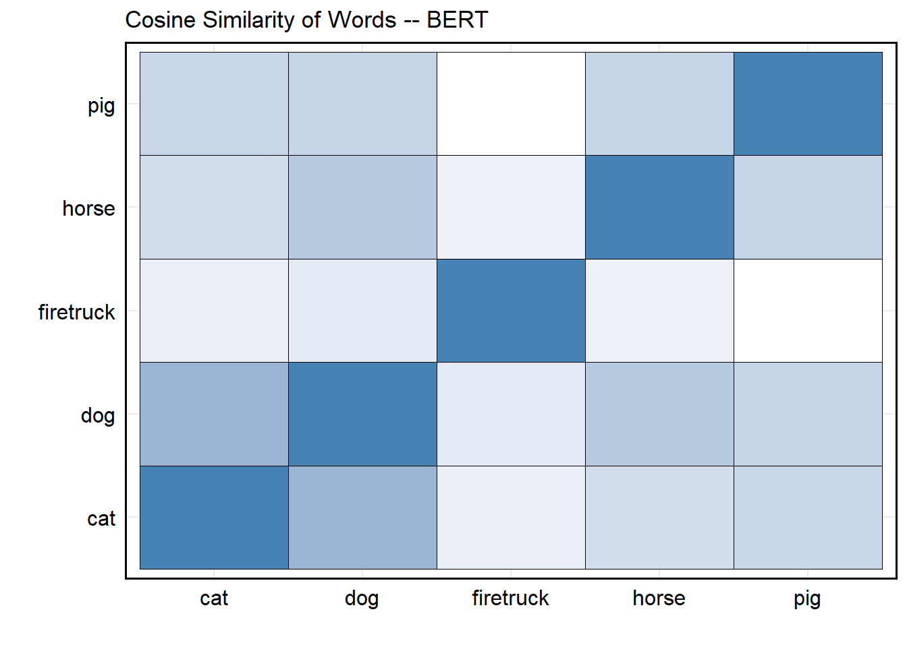

To this point, our analyses of text have largely relied on one-hot encoding. From rudimentary co-occurrence measures using dictionaries to more advanced approaches like Naive Bayes, we have remained firmly within the Bag-of-Words (BoW) framework. As we noted when first introducing BoW, even with careful preprocessing and complexity reduction, this approach has an important limitation: it provides no way to represent similarity between words.
Consider the matrix below, which represents a one-hot encoding of a small vocabulary:
| Dog | Cat | Horse | Pig | |
|---|---|---|---|---|
| Dog | 1 | 0 | 0 | 0 |
| Cat | 0 | 1 | 0 | 0 |
| Horse | 0 | 0 | 1 | 0 |
| Pig | 0 | 0 | 0 | 1 |
Notwithstanding the diagonal, all entries are zero. The vector for cat would then be \(\text{cat} = (0, 1, 0, 0)\), which conveys only the fact that the word is cat and nothing else. For some tasks – e.g., identifying whether a document from a veterinary hospital discusses a particular animal, this may be sufficient.
But what if we have a vocabulary like this?
| Dog | Pooch | K9 | Fire Truck | |
|---|---|---|---|---|
| Dog | 1 | 0 | 0 | 0 |
| Pooch | 0 | 1 | 0 | 0 |
| K9 | 0 | 0 | 1 | 0 |
| Fire Truck | 0 | 0 | 0 | 1 |
Suddenly we’re at risk of some information loss – because Dog, Pooch, and K9 are reasonably describing the same thing. Put a different way, if we were to approach this as a clustering task, how would we organize this vocabulary? Certainly we wouldn’t want to say each word represents it’s own cluster center. Rather, the assortment would probably be \(K_{1} = (\text{Dog, Pooch, K9})\) and \(K_{2} = (\text{Fire Truck})\). Yet this structure is invisible in a one-hot representation, where all distinct words are equally dissimilar.
So, I am going to posit we consider a few things:
Words have similar meaning. Recall that we discussed a few classes ago just how broad and diverse the English language is. Move from a dictionary to a thesaurus and you’ll quickly realize that virtually every word has a worthy synonym to replace it given syntax or other some reasoning. Word choice is certainly an important indicator of author’s intent (it was good enough to attribute authorship of disputed Federalist Papers!), but treating each word as entirely distinct is often too restrictive. Moreover, many words are polysemous, taking on different meanings depending on context. A good example (I think) from my own research is Judge – which, given context as a verb (to judge) versus a noun (a judge) can prescribe very different meanings.
Similarity is not fully captured in word co-occurrence: Rather than asking whether two words are exactly the same, a more useful question is whether they tend to appear in similar contexts. If we were to compare words across a corpus, we would expect Pooch to appear in usage settings much closer to Dog than to Fire Truck. One-hot encodings cannot represent this graded notion of similarity.
Distributed Representations of Words are dense vectors that replace the one-hot encoding representation of words that build in some measure of similarity. In short, rather than a sparse vector of mostly-zeros to represent a word, we’ll use data to construct a vector of length K (where K is less than J – the total number of unique words int he vocabulary). Reducing the dimensionality like this is what allows word embeddings to capture similarity structure (e.g., semantic or syntactic relationships) efficiently. The key advantage is that the representation is no longer (essentially) dichotomous, where a word is coded as 0/1 in a high-dimensional sparse vector. Instead, we construct a low-dimensional representation of each word, such that its position along each dimension can be used to infer similarity to other words. As GSR note, these distributed representations are typically learned through the distributional hypothesis, which holds that words appearing in similar contexts tend to have similar meanings. In this sense, word embeddings operationalize contextual co-occurrence patterns in a way that moves beyond the independence assumptions of the traditional Bag of Words approach. Moreover, through a process called transfer learning, we can use a large corpus of text data to discover a numeric representation for each word (rather than specifying it a priori) – thus providing the means to estimate the similarity of certain words (though this also assumes that words generally have similar meaning – at least contextually – across different corpora).
To also borrow from the canonical quote underpinning much of modern text analysis – you shall know a word by the company it keeps (Firth 1957). We can learn something about the semantic meaning of words on the basis of the words that appear most frequently in context windows surrounding that focal word – i.e., rather than labeling data ahead of time, I can make informed assessments about the meaning of certain words given the pattern of co-occurrences from large unlabeled collections that are readily available.
They Encode Similarity
Perhaps the most debilitating shortcoming of the Bag of Words assumption is that (for example) the inner product of any two different words will always be zero, thus eliminating any notion of similarity between them. Even if the words are (for example) Pooch and Dog, which obviously retain contextual and substantive similarity, approaches structured using the BoW approach will fail to capture similarity as a function of semantic or syntactic similarity, often (only) strict co-occurrence. Instead, a distributed representation of words allows for models to capture the notion that these words are often used in markedly similar contexts and should thus be considered as more alike (than not), at least in comparison to other words in the corpora – e.g., firetruck.
They Allow for Automatic Generalization
Automatic Generalization concerns the ability for word embeddings to provide meaning to related words. Whenever we have been discussing creating vocabularies – either for rules-based or probability-based classification tasks, we consistently acknoweldge the need to create vocabularies or training sets that fully represent the (multi)class structure we’re aiming to investigate. For instance, if we never code pooch and dog as being similar, we will invariably lose that meaning. Yet, through automatic generalization, their location in embedding space should ideally be close together because they are frequently used in similar contexts. In short, embeddings provide an efficient way of sharing information across words.
They Provide a Measure Meaning
This is not to say that word (sentence) embeddings can actually recover the definition of words and make informed assessments or perform tasks given their understanding – we’re not talking about generative AI. Rather, embeddings provide meaning in that, because words are consistently used in similar contexts, we can assert that they share similar features and are thus likely synonyms of similar discurisve properties.
GSR note four important considerations – reinforced by Rodriguez and Spirling (2022) – when estimating word embeddings:
Data Source: What type of data do you need? Obviously you’ll need large sources of external corpora with a lot of tokens to properly and sufficiently capture the lexical diversity of language. Embeddings trained on these sources of data (e.g., Wikipedia) are readily available and have shown to be very effective for general use cases.
Content Window Size: Since many embedding models are trained to predict a word from its surrounding context (or vice versa), the size of that context window plays a crucial role in shaping what the model learns. As noted by GRS, smaller context windows tend to capture syntactic relationships (i.e., how words function structurally within sentences), whereas larger windows, though more computationally intensive, are more likely to capture semantic relationships (i.e., what words mean substantively in broader discourse).
Dimension of the Embedding: As GRS note, early word embedding models typically encoded information in relatively low-dimensional spaces (often 50–500 dimensions). In contrast, modern contextual models frequently operate in substantially higher-dimensional spaces, largely due to the rise of transformer-based architectures such as BERT and GPT. OpenAI stopped publicly reporting architectural details such as hidden dimensionality after GPT-3, though the largest GPT-3 model employed a hidden size of over 12,000 dimensions – that is, the dimensionality of the transformer’s internal token representations, which differs from the final output embedding vectors typically used to (for instance) recover similarity-based measures. Nevertheless – while huge leaps and bounds have been made for tools like Generative AI, most embedding-based applications we’re going to be concerned with (e.g., BERT, word2vec, etc.) are not even remotely touching that scale of dimensionality.
Algorithm: With the component parts above, the final consideration is how to execute and optimize – i.e., how are you wanted to learn the embeddings from the data?
Most modern embedding techniques are derived from neural networks, a computational framework modeled on the processes of the human brain. In short, these networks learn patterns by passing information through layers of “neurons” – including “hidden” layers that help the model understand complex relationships.
Consider the following text from a corpus with (hopefully) millions
of other tokens:
john adams was the second president of the united states.
If I wanted to embed these words with president as the
focal word and using the Continuous Bag of Words (CBOW) approach
described in GRS, I would do something like this:
\[\operatorname*{arg\,max}_{\mu_{\text{president}}}
=
\frac{\exp(\mu_{\text{president}}\cdot\overline{v})}{\sum_{j}\exp(\mu_{j}\cdot\overline{v})}\]
where \(\overline{v}\) represents the
average of all embeddings for words in the string other than
president (i.e.,
john adams was the second of the united states), while
\(j\) indexes over the entire
vocabulary (i.e., every other token available, not just what’s in this
sentence). Negative sampling to approximate a weighted random sample of
a few words from the vocabulary (\(j\))
is often used rather than actually allowing the denominator to consider
(approximate a soft-max) potentially millions of terms. The idea
being that, through subsequent encodings, the model will still be able
to discern the patterns and relationships without needing to actually
approximate from the full vocabulary every single time.
As you might imagine, the transition from theory to application here
is incredibly burdensome. This is not like Naive Bayes or a similar
strategy we’ve discussed before where – given some cues re: allocating
computing resources – these sorts of models are able to be deployed at
the same scale using modern laptops. For reference, there’s some
discussion below regarding two of the most important developments for
the integration of word embeddings into the social sciences –
word2vec and GloVe. word2vec was
developed by Google in 2013 and trained using text from Google News
(\(\approx\) 100 billion words), while
GloVe was developed by researchers at Stanford University
and trained using text from a combination of Wikipedia (\(\approx\) 4.5 billion tokens), Gigaword
(\(\approx\) 6 billion), and Common
Crawl (100s billions). It’s simply not feasible to develop and train
these models locally.
Luckily – we don’t have to! These (and others) represent a suite of pre-trained models that are publically available for use by researchers. Deployment of these tools is demonstrated below.
word2vec follows the same intuition outlined earlier re:
Continuous Bag of Words and negative sampling to predict a focal word.
GRS also spend some time talking about the skipgram alternative,
which is essentially the inverse intuition – i.e., predicting each of
the context words using the focal words. Below I demonstrate just the
CBOW approach, though implementing the skipgram model requires little
adjustment and should (ideally) produce embeddings with the same
relative positioning in vector space.
library(word2vec) # Load Package
reviews = sapply(imdb, reduce_complexity) # Text from IMDB Reviews Dataset
cbow_model = word2vec(x = reviews, # IMDB Text
type = "cbow", # Cont. Bag of Words
dim = 15, # 15 Dimensions
iter = 20) # 20 Iterations (max)Now we’ll find words similar to terrible and
masterpiece from the trained cbow model.
cbow_lookslike <- predict(cbow_model, c("terrible", "incredible"), type = "nearest", top_n = 5)
message("The nearest words for 'Terrible' and 'Incredible' in CBOW model prediction is: ")
print(cbow_lookslike)We can do the same but this time recover the embeddings instead of the words:
cbow_embedding <- predict(cbow_model, c("terrible", "incredible"),type = "embedding")
print(cbow_embedding)We can finally visualize the embedding space:
word_vectors <- as.matrix(cbow_model) # Convert Model to Matrix
similar_words <- unique(c(c("terrible", "incredible") , unlist(predict(cbow_model, c("terrible", "incredible") , type = "nearest", top_n = 10))))
word_vec_subset <- word_vectors[rownames(word_vectors) %in% similar_words, ] # Filter to Similar Words
set.seed(123) # Set Random Seed
tsne_out <- invisible(Rtsne(
word_vec_subset, # Subset of Similar Words
dims = 2, # 2 Dimensions
perplexity = 5,
verbose = FALSE,
max_iter = 500
))
data.frame(word = rownames(word_vec_subset),
dim_1 = tsne_out$Y[,1],
dim_2 = tsne_out$Y[,2]) %>%
ggplot(aes(x = dim_1, y = dim_2, label = word)) +
geom_point(colour = 'black', size = 3) +
geom_text(vjust = -0.75, hjust = 0.5, size = 3.5) +
default_ggplot_theme # VisualizeWhile word2vec is chiefly concerned with a process akin
to I’ll look at the words around this word and try to guess it
(local prediction), GloVe is alternatively more
concerned with a process of I’ll look at how often this word
co-occurs with all other words in the corpus (global
statistics). It works by factorizing a word co-occurrence matrix
from the entire available corpus, such that each word has its own vector
but can also recover entire corpus statistics (not just insight from
small context windows).
To use the pre-trained GloVe model, you will need to
download a model version from the official repository. These versions
are available
here. Once loaded
to R, let’s use it to recover the cosine similarity of the
embeddings for some of the words introduced at the beginning of this
page: dog, cat, horse, pig, and firetruck.
glove_mat <- as.matrix(glove[, -1]) # Convert Glove to Matrix
rownames(glove_mat) <- glove$word # Assign Rownames
words <- c('dog', 'cat', 'horse', 'pig', 'firetruck')
cosine_similarity <- function(u, v) {
sum(u*v) / (sqrt(sum(u^2)) * sqrt(sum(v^2)))
} # Function to Recove Cosine Sim
n = length(words)
cosine_sim_matrix <- matrix(nrow = n, ncol = n)
colnames(cosine_sim_matrix) <- rownames(cosine_sim_matrix) <- words
for (i in 1:length(words)){
temp_word <- words[i]
for (j in 1:length(words)){
temp_comparison_word <- words[j]
cosine_sim_matrix[i, j] <- cosine_similarity(u = glove_mat[as.character(temp_word), ],
v = glove_mat[as.character(temp_comparison_word), ])
} # Recover Cosine Sim
} # Recover Cosine Sim for Each Word Pair
as.data.frame(cosine_sim_matrix) %>%
mutate(Word1 = rownames(cosine_sim_matrix)) %>%
tidyr::pivot_longer(cols = -Word1, names_to = "Word2", values_to = "CosineSim") %>%
ggplot(aes(x = Word1, y = Word2, fill = CosineSim)) +
geom_tile(colour = 'black') +
labs(x = '', y = '', title = 'Cosine Similarity of Words -- GloVe') +
scale_fill_gradient(low = "white", high = "steelblue") +
default_ggplot_theme
We’re not going to devote a lot of time to (deep) transformers, but
BERT (and its subsequent
improvements like
RoBERTa,
DistilBERT, and
SBERT) are both
incredibly useful for social science research, as well as easy to
implement with python. In short, BERT
(Bi-directional Encoder Representations from Transformers) uses masked
language modeling and next sentence prediction to learn
context-dependent word and sentence representations. In short, the
masked language step teaches the model the meaning of each word in
context (i.e., encoding), while the next sentence predictions step
teaches the model how sentences fit together logically. However, what
really makes this neat (without going too far down the
transformer rabbit hole) is its use of bidirectional attention – i.e.,
while neural networks process sequentially, the bi-directional attention
mechanisms for transformer-based models let each word consider all other
words at once! The result is an output vector that isn’t static like
word2vec or GloVe, but a context-based
embedding that changes depending on how words are used.
library(reticulate)
virtualenv_create()# Create Virtual Environment (If Needed)## virtualenv: ~/.virtualenvs/r-reticulateuse_virtualenv(required = TRUE) # Activate Environment
required_packages <- c("torch", "transformers", "sentence-transformers")
for (pkg in required_packages) {
if (!py_module_available(pkg)) {
virtualenv_install(packages = pkg)
}
} # Install torch, transformers, and sentence-transformers (if needed)## Using virtual environment "~/.virtualenvs/r-reticulate" ...sentence_transformers <- import("sentence_transformers") # Import sentence-transformers
model <- sentence_transformers$SentenceTransformer("all-MiniLM-L6-v2") # Call Small Bert Model
words <- c('dog', 'cat', 'horse', 'pig', 'firetruck')# Same Words as Earlier
embeddings <- model$encode(words) # Recover Embeddings
n <- length(words)
cosine_sim_matrix <- matrix(nrow = length(words), ncol = length(words))
rownames(cosine_sim_matrix) <- colnames(cosine_sim_matrix) <- words
for (i in 1:n) {
for (j in 1:n) {
cosine_sim_matrix[i, j] <- cosine_similarity(embeddings[i, ], embeddings[j, ])
}
} # Recover Cosine Sim for Each Word Pair
as.data.frame(cosine_sim_matrix) %>%
mutate(Word1 = rownames(cosine_sim_matrix)) %>%
tidyr::pivot_longer(cols = -Word1, names_to = "Word2", values_to = "CosineSim") %>%
ggplot(aes(x = Word1, y = Word2, fill = CosineSim)) +
geom_tile(colour = 'black') +
labs(x = '', y = '', title = 'Cosine Similarity of Words -- BERT') +
scale_fill_gradient(low = "white", high = "steelblue") +
default_ggplot_theme